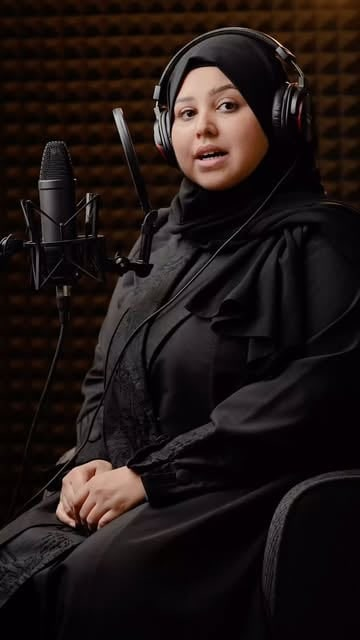

انطلاقة
يبدأ من$700شهريًا≈ 215 د.ك
- 8 فيديوهات قصيرة شهريًا
- خطة محتوى وكتابة النصوص
- النشر وكتابة الوصف والوسوم
- تقرير شهري بالنتائج
السيرة المهنية ومعرض الأعمال · ORAKTION
مخرج إبداعي بالذكاء الاصطناعي وصانع محتوى متعدد الوسائط
إعلانات سينمائية بالذكاء الاصطناعي · أفكار غير مألوفة · كتابة وأداء صوتي
أصنع إعلانات سينمائية بالذكاء الاصطناعي من أفكار غير مألوفة، وأكتب الحكاية وأؤدي الشخصية وأُخرج عالمها بالصورة والصوت. أجمع خبرتي في المونتاج والتسويق مع أدوات الـAI، وأقدّم هنا مختارات من أعمالي ومساري المهني. أوراكشن هويتي الإبداعية، ومنها أفتح باب التوظيف والمشاريع والتعاون.
 خلف هذه العوالم: سلمان غازي الحسينيAI Creative Director & Multimedia Creator
خلف هذه العوالم: سلمان غازي الحسينيAI Creative Director & Multimedia CreatorGAMESTORE · فكرة وإنتاج أوراكشن · 10 آلاف مشاهدة في أول 5 أيام
الدليل في العمل
أعمال مختارة تكشف طريقة تفكيري. داخل كل عمل ستجد الفكرة ودوري واعتمادات المشاركين.
SALMAN GHAZI AL HUSSEINIأوراكشن هويتي الإبداعية. وهذه حكايتي.
AI Creative Director & Multimedia Creator
بدأت من المونتاج، ثم جمعت الكتابة والصوت والأداء والتسويق في ممارسة إبداعية واحدة. اليوم أطور الأفكار وأقود تنفيذها بالصورة والحركة والصوت، مستعينًا بأدوات الذكاء الاصطناعي.
أنا أيضًا ممثل صوتي ومؤدي فويس أوفر، وأقود فريق السهم القرمزي للدوبلاج — SAROVOX. أوضح دوري ومساهمات المتعاونين داخل كل عمل.
إعلانات سينمائية بالذكاء الاصطناعي بأفكار مبتكرة، وحلقات كرتون وأنمي، وكتابة محتوى وإدارة حسابات لجهات متعددة؛ مع تعليق صوتي ودوبلاج مدفوع لجهات محددة.
سجّلت أكثر من 55 شركة في التطبيق.
حملة لمدة شهر سُجّلت خلالها 200 شركة، ثم التصميم الجرافيكي ومحتوى الحسابات حتى قرر الملاك بيع التطبيق.
تسويق ومحتوى وحملات وتنسيق إعلامي في قطاع الدعاية والإعلان.
الباقات والأسعار · لعملاء من كل مكان
أدير قناتك على تيك توك أو يوتيوب أو إنستغرام وأصنع محتواها كاملًا: الفكرة والكتابة والإنتاج بالذكاء الاصطناعي والصوت البشري والمونتاج والنشر، مع تقرير شهري بالنتائج.
يبدأ من$700شهريًا≈ 215 د.ك
يبدأ من$1,200شهريًا≈ 370 د.ك
يبدأ من$2,000شهريًا≈ 615 د.ك
قصص أصلية للأطفال بصوت بشري دافئ. المحتوى العربي للأطفال أقل بكثير من الطلب عليه.
أريد قناة مثل هذه ↗قصص للأطفال بالسرد والمناظر والحيوانات، دون تصوير الأنبياء أو الملائكة، مع مراجعة شرعية للنص.
أريد قناة مثل هذه ↗حكايات الحكمة العربية الكلاسيكية بإخراج سينمائي وأصوات تمثيلية لكل شخصية.
أريد قناة مثل هذه ↗الغوص على اللؤلؤ والأسواق القديمة وحكايات جحا والتراث، بصورة سينمائية حديثة.
أريد قناة مثل هذه ↗شخصية تمثل متجرك أو علامتك تعيش مغامرة قصيرة كل أسبوع، فيتعلق بها الجمهور.
أريد قناة مثل هذه ↗قصة فانتازيا بحلقات أسبوعية في عالم أصلي، للمراهقين والكبار.
أريد قناة مثل هذه ↗يبدأ من$250للإعلان≈ 75 د.ك
يبدأ من$900للإعلان≈ 275 د.ك
يبدأ من$450للدقيقة≈ 140 د.ك
الأسعار نقطة بداية، ويُحدَّد السعر النهائي بعد الموجز حسب المدة والتعقيد والتعديلات. ميزانية الإعلانات الممولة غير مشمولة. نوصي بالتزام ثلاثة أشهر للباقات الشهرية، لأن نمو القنوات يحتاج وقتًا. الأسعار بالدولار، والدينار الكويتي تقريبي.
ابدأ بما تريد صنعه
اختر المسار الأقرب لك. ستجد ما أقدمه، وكيف نبدأ، ونموذجًا يوضح الأسلوب.
خدمات مستقلة، أو أجزاء من إنتاج متكامل يقوده سلمان.
فكرة ونص وسيناريو، من رسالة إعلان إلى قصة فانتازيا وبناء عالم.
صوتي البشري للتعليق والشخصيات، مع نبرة وإيقاع يلائمان المشهد.
توجيه الشخصيات ومراجعة الأداء وتنسيق المساهمات مع فريق السهم القرمزي.
بناء إيقاع المشهد ودمج الحوار والموسيقى والمؤثرات في تجربة متماسكة.
كتابة كلمات وتطوير ألحان وغناء بالذكاء الاصطناعي يخدم الحكاية أو الهوية.
تحديد الجمهور والرسالة، وتطوير موضوعات وصيغ تصلح لاستمرار القناة أو العلامة.
الفكرة وراء الصورة
اختر عملًا لتستكشف فكرته، وطريقة تنفيذه، ودوري فيه.
سلمان × السهم القرمزي
هذه نماذج لأدائي البشري في الأنمي والكرتون والألعاب والشخصيات الدرامية. افتح العمل لتعرف الشخصية ومساهمات المشاركين.
إخراج النص، والصوت، واللحن
سرد بالعربية الفصحى وغناء بالذكاء الاصطناعي، مع توضيح الكتابة والإخراج ونوع الصوت في كل عمل.

أصوات تتلاقى. ومساهمات واضحة.
تؤدي لارا في «الأرقام المتكررة». وإلى جانب عملنا المشترك، استمع إلى نموذجين من أدائها الإعلاني المستقل.
طريق واضح من البداية
تواصل مباشر معي، واتفاق واضح على الفكرة والمخرجات والموعد قبل بدء الإنتاج.
ما الذي تريد تقديمه، ولمن؟
معالجة ونص وأسلوب بصري يناسب مشروعك.
مراحل اعتماد واضحة ومراجعات متفق عليها.
نسخ مناسبة للنشر، واستمرار حسب احتياجك.
قبل أن نبدأ
يكفي أن تشرح ما تقدمه، ولمن، وما الذي تريد من الجمهور فعله. نبدأ من هنا لتطوير الفكرة المناسبة.
بحسب مدة العمل وتعقيد المشاهد والصوت والمواد المتاحة. نتفق على المخرجات والمراجعات والموعد في عرض واضح قبل الإنتاج.
أقدّم أدائي الصوتي البشري، وأتعاون مع مؤدين، وأستخدم أصواتًا وغناءً بالـAI في أعمال أخرى. نوع الأداء ومساهمات المشاركين موضحان مع كل نموذج.
اطّلع على خبرتي وأدواري في الأعمال، ثم اختر التوظيف أو التعاون عند التواصل. السيرة الذاتية متاحة بالطلب المباشر.
فرصة جديدة تبدأ بحديث
فكرة واضحة أو بداية تبحث عن اتجاه، مشروع مستقل أو فرصة داخل فريق. أخبرني بما تحتاجه وسنحدد الخطوة المناسبة.